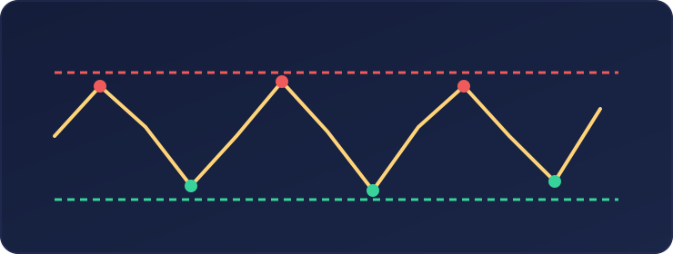
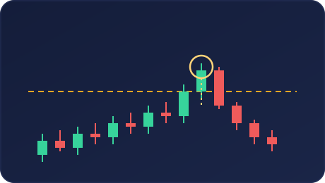
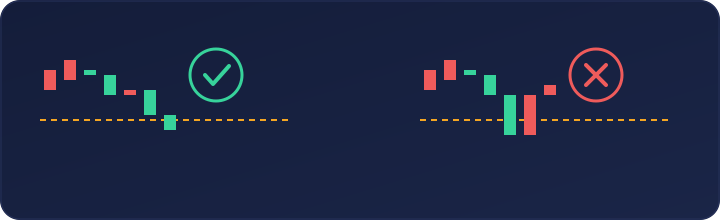

Una de las experiencias más frustrantes para quien empieza a hacer trading es esta: el precio rompe un nivel importante, parece que por fin va a continuar con fuerza, entramos en la operación… y pocos minutos después se gira en nuestra contra.
No siempre es mala suerte. Muchas veces estamos ante una de las situaciones más frecuentes del mercado: una falsa ruptura. Entender este comportamiento no sirve para adivinar el futuro, pero sí puede ayudarte a evitar entradas impulsivas y a leer el precio con más paciencia.
¿Qué es una falsa ruptura?
Una falsa ruptura ocurre cuando el precio supera temporalmente un nivel relevante —un máximo, un mínimo, un soporte, una resistencia o el límite de un rango— y poco después vuelve al interior de la zona que acababa de romper. Imagina que el precio lleva varias horas moviéndose entre dos niveles: una resistencia en la parte superior y un soporte en la parte inferior.
Muchos traders esperan que, si rompe la resistencia, el precio continúe subiendo. Por eso colocan órdenes de compra justo por encima de ese nivel. Al mismo tiempo, las personas que estaban vendidas suelen colocar sus stop loss en esa misma zona. Cuando el precio supera el máximo, puede activar muchas órdenes a la vez. Sin embargo, si no consigue mantenerse por encima y regresa al rango con rapidez, la ruptura puede haber sido falsa.

El problema de entrar demasiado pronto
El error habitual no es mirar una ruptura. El error es asumir que toda ruptura debe continuar. Cuando aparece una vela grande atravesando un nivel, es normal sentir miedo a quedarse fuera del movimiento. Esa sensación lleva a muchos traders a entrar en el momento de mayor euforia, sin esperar confirmación. En ese instante suelen ocurrir tres cosas:
- Se compra o se vende justo después de un movimiento ya extendido.
- El stop loss se coloca donde lo pondría la mayoría.
- El precio vuelve al rango y deja atrapadas a las entradas tardías.
No significa que todas las rupturas sean falsas. Significa que una ruptura, por sí sola, no es suficiente para tomar una decisión.
¿Por qué se producen las falsas rupturas?
Por encima de máximos visibles y por debajo de mínimos visibles suele concentrarse mucha actividad: órdenes pendientes, entradas por ruptura y stop loss de operaciones anteriores. El mercado no tiene intención ni «persigue» personalmente a nadie. Pero esas zonas pueden reunir una gran cantidad de órdenes y, por tanto, liquidez. El precio puede atravesarlas, activar esa actividad y regresar después al rango.
Por eso, en vez de pensar únicamente «ha roto una resistencia», es más útil hacerse otra pregunta: ¿el precio ha roto el nivel y ha sido capaz de mantenerse fuera de él? La diferencia parece pequeña, pero cambia por completo la lectura.
Señales de una posible ruptura real
No existe una señal infalible. Aun así, una ruptura tiene más probabilidades de ser válida cuando reúne varios elementos:
- El cierre de la vela queda claramente al otro lado del nivel.
- El precio se mantiene fuera de la zona rota durante un tiempo razonable.
- Aparece un retroceso o retest que respeta el nivel.
- La ruptura está alineada con la estructura general del mercado.
- Hay impulso, pero también continuidad después del impulso.
- No se produce un rechazo inmediato hacia el interior del rango.
El retest es especialmente interesante porque permite comprobar si una antigua resistencia puede actuar como soporte, o si un antiguo soporte puede actuar como resistencia.
Señales de una posible falsa ruptura
Una ruptura merece más cautela cuando aparecen señales como estas:
- El precio atraviesa el nivel solo con una mecha.
- La vela cierra de nuevo dentro del rango.
- Tras superar el nivel, no hay continuación.
- El regreso al rango es rápido y fuerte.
- La ruptura va en contra de la tendencia o del contexto de marcos temporales superiores.
- El movimiento se produce cerca de una noticia importante o en un horario de baja liquidez.
Una mecha no confirma por sí sola una falsa ruptura, pero sí indica rechazo. Cuanto más rápido pierde el nivel el precio, más prudencia conviene tener.

Ejemplo sencillo de falsa ruptura alcista
Supongamos que EUR/USD lleva varias horas dentro de un rango y tiene una resistencia visible en 1,1000. El precio sube hasta 1,1005. Muchos traders interpretan que la resistencia se ha roto y compran. Pero, poco después, el precio cae de nuevo por debajo de 1,1000 y vuelve al rango.
Esta situación puede indicar que la ruptura no encontró suficiente continuidad. Las compras que entraron tarde quedan atrapadas y el precio puede dirigirse hacia el lado contrario del rango. La clave no era solo que el precio superara 1,1000. La clave era comprobar si podía mantenerse por encima.
Ejemplo sencillo de falsa ruptura bajista
Ahora imagina el caso contrario. Un activo tiene un soporte visible y el precio rompe momentáneamente por debajo. Aparecen ventas, se activan stop loss de personas que estaban compradas y parece que va a comenzar una caída fuerte. Sin embargo, el precio recupera el soporte rápidamente y vuelve al interior del rango.
Ese regreso puede ser una señal de que la ruptura bajista no tuvo continuidad. No garantiza una subida posterior, pero sí cambia la lectura del contexto.

Esperar no es perder una oportunidad
Muchos traders creen que deben entrar en la primera vela de ruptura. Pero esperar confirmación no significa llegar tarde: significa exigir más información antes de asumir riesgo. Una forma prudente de analizar una ruptura es observar esta secuencia:
- Identificar un nivel relevante.
- Esperar a que el precio lo atraviese.
- Comprobar dónde cierra la vela.
- Ver si el precio mantiene el nivel o vuelve al rango.
- Esperar, si aparece, un retest o una señal de rechazo clara.
- Decidir solo si el contexto, el riesgo y el plan tienen sentido.
Habrá movimientos que continúen sin dar una segunda oportunidad. Eso forma parte del mercado. Intentar capturarlos todos suele llevar a entrar en situaciones de baja calidad.
La falsa ruptura como lección de paciencia
Una falsa ruptura no tiene por qué ser una señal automática para operar en sentido contrario. Antes de cualquier operación hay que valorar el contexto, el tamaño de la posición y el riesgo. Pero sí deja una enseñanza muy útil: el primer movimiento no siempre es el movimiento real.
Los traders principiantes suelen reaccionar a la ruptura. Los traders con más experiencia aprenden a observar qué ocurre después de ella. En trading, muchas veces la diferencia no está en encontrar más indicadores. Está en esperar unos minutos, evitar una entrada impulsiva y dejar que el precio confirme su intención.
Conclusión
Las falsas rupturas forman parte natural de los mercados. No pueden eliminarse, pero sí pueden entenderse. La próxima vez que el precio rompa un nivel importante, evita preguntarte únicamente «¿ya ha empezado el movimiento?». Pregúntate también:
- ¿Ha cerrado fuera del nivel?
- ¿Puede mantenerse fuera?
- ¿Hay continuación o rechazo?
- ¿Estoy entrando por análisis o por miedo a quedarme fuera?
Aprender a esperar una respuesta puede evitar muchas operaciones innecesarias.
Este artículo tiene finalidad educativa y divulgativa. No constituye asesoramiento financiero ni una recomendación de inversión. Operar en los mercados implica riesgo de pérdida.